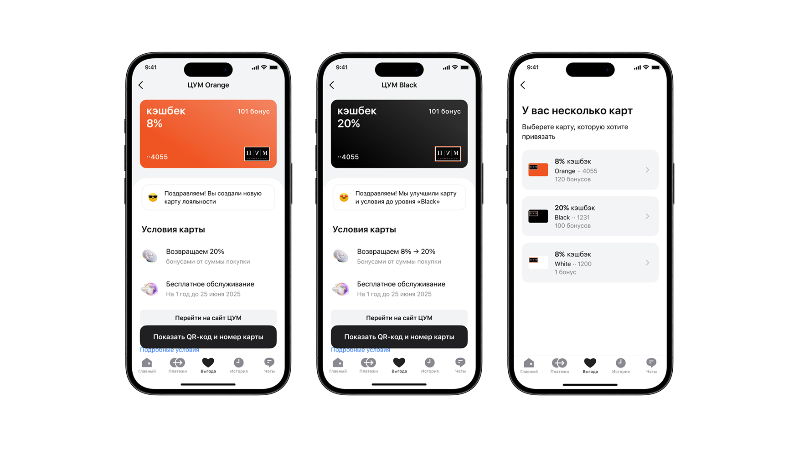
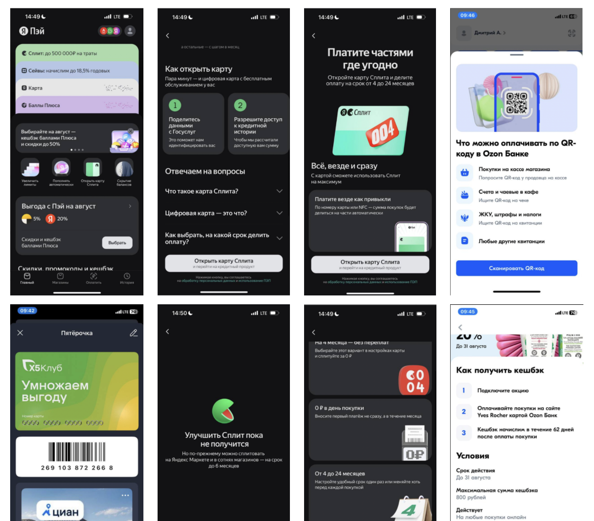
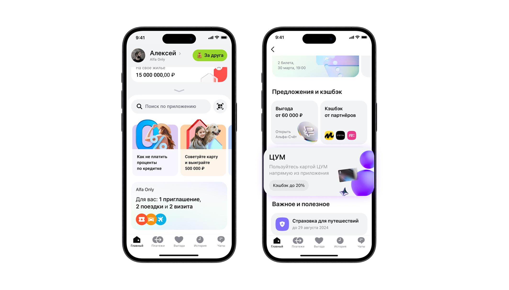
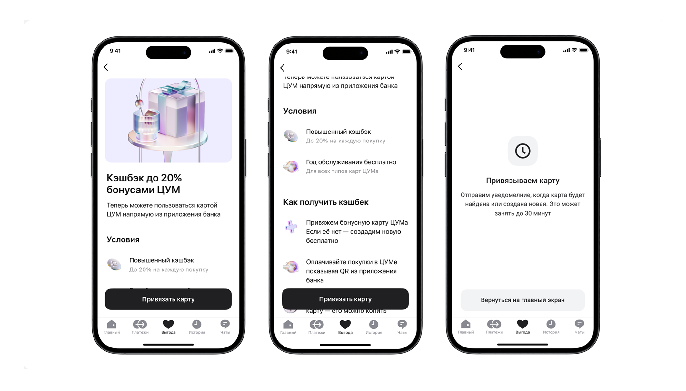
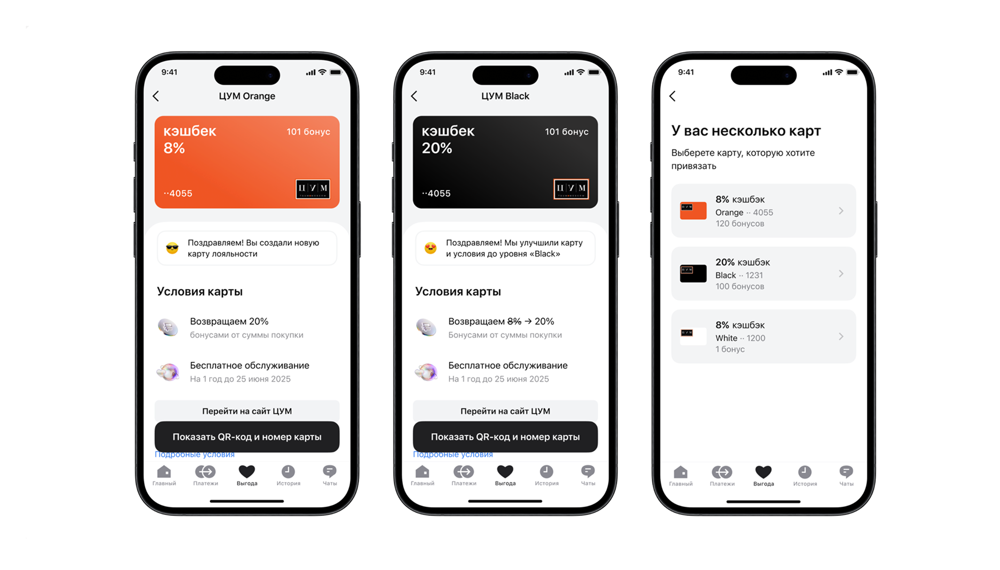

Для премиальных категорий пользователей объединяем программы лояльности в рамках стратегического партнёрства с ЦУМ. Для категорий пользователей Альфа-Онли и А-клуб банк на год бесплатно предоставляет право участия в программах лояльности ЦУМ.
Упростить текущий флоу и убрать ненужные экраны
Увеличить конверсию в использование карты лояльности и куар
Обновить дизайн и добавить информацию о новых возможностях для клиентов
Благодаря коллаборации ЦУМ и Альфа, будет возможность растить вовлечение и узнаваемость бренда у обоих.
Рост выручки за счёт комиссии Альфы с транзакций по картам ЦУМ внутри продукта.
Миссия
Дать премиальным клиентам доступ к кэшбэку и привилегиям партнёрской программы ЦУМ — возможность экономить за счёт широкой линейки лояльности.
Цель
Переработать флоу так, чтобы увеличить конверсию в использование карт и частоту их применения. Как следствие — рост выручки за счёт комиссии партнёрской программы между Альфой и ЦУМом.
Аудитория
Премиальный сегмент
Открыли для себя карту лояльности ЦУМ (вне банка)
Пользователи, которые используют b2b-карты альфы
Критерии успеха
Рост операций по карте ЦУМ (orange/black/white)
Статистический рост conversion rate с точки входа в использование карт лояльности ЦУМа
Увеличение User activation rate, переход в ключевое действие, а именно в использование qr-кода карты
Проанализировала конкурентов и сформулировала гипотезы, которые могут повлиять на ключевые метрики.

Яндекс Pay сопровождает карты онбордингом — на первом входе пользователь сразу видит ценность от использования (Сплит, Сейвы). Аналогичный подход у Ozon Банка.
У большинства конкурентов (pay, сбер, тиньк) точка входа в программы лояльностей имеет виджетный блок, где заранее подсвечены выгоды от использования партнерской программы в виде кэшбэков.
Если первым клиентам дадим осязаемую ценность, засчёт которой сможем вырастить лояльность, сможем увеличить conversion rate, вырастим осведомленность о продукте
Пользователи не понимают чем карта black отличается от карт white/orange. Если у клиента при подключении больше одной карты лояльности, то мы должны предложить ему преимущества и отличия одной от другой (у нас же разница в процентах кэшбэка), поэтому ацент на предложении банка нужно вынести на первый план.
Если мы внедрим точку входа с приоритетом в ценности, внутри продуктов с кэшбеком то сможем увеличить проходимость внутрь (DAU & MAU, conversion rate в продукт)
Если с помощью тренеры, мы будем навигировать пользователя и подсказывать внутри продукта, то сможем увеличить лояльность и time to value
При первом заходе пользователь скроллит до блока Alfa Only, где собраны все премиальные продукты. По нажатию на карточку ЦУМ — вход в продукт.

По нажатию открывается онбординг — по гипотезе он повышает восприятие ценности и лояльность. Совместно с продактом вынесли ключевые преимущества на первый экран, опираясь на практики Яндекс Pay.

Клиенты с картами ЦУМ могут быть разными, клиент у которого есть все карты, либо одна карта, либо клиент только что завел ее у нас и у него пока нет баллов.
Ключевой вопрос — что пользователь видит первым. По гипотезе акцент на кэшбэке, потому что он одинаково релевантен и новым пользователям, и тем, кто уже подключил карту.

Тренер ведёт пользователя по продукту, объясняя функциональность на каждом шаге — это повышает вовлечённость и снижает порог входа. Фиксированная кнопка QR-кода и ссылка на сайт ЦУМ работают как точки кросспродаж.
10/10 легко находят точку входа в Alfa Only.
8/10 разобрались, как открывать и активировать карту лояльности ЦУМ.
7/10 отметили, что тренер вызывает положительные эмоции, а проработанный tone of voice маскота помогает ориентироваться в продукте.
8/10 поняли, как подключить карту лояльности внутри продукта.
10/10 поняли как использовать QR-код для оплаты.
Рост конверсии в создание карт лояльности ЦУМ внутри Альфа: Абсолютный рост 12,8 п.п., относительный 38,24%.
Увеличение Retention, среди премиум юзеров, увеличилось на 43%.